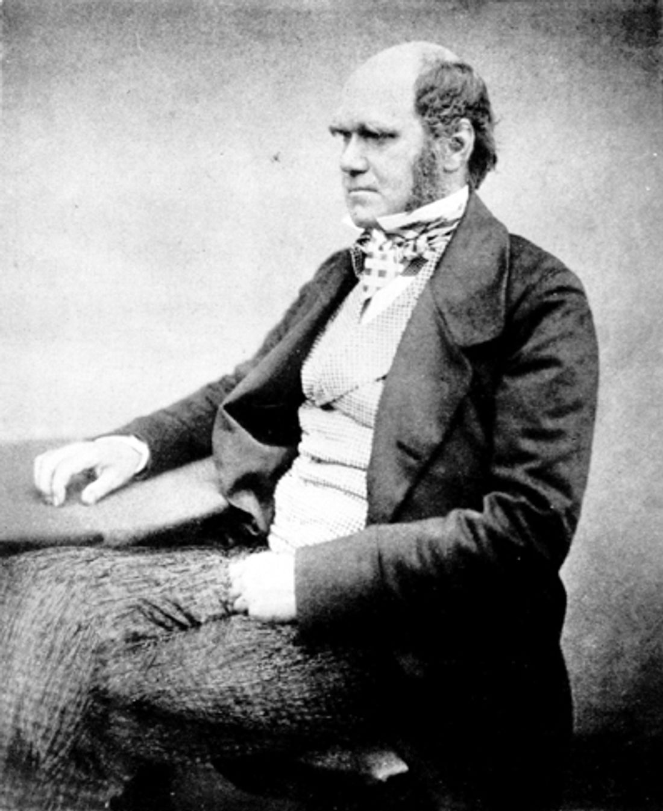
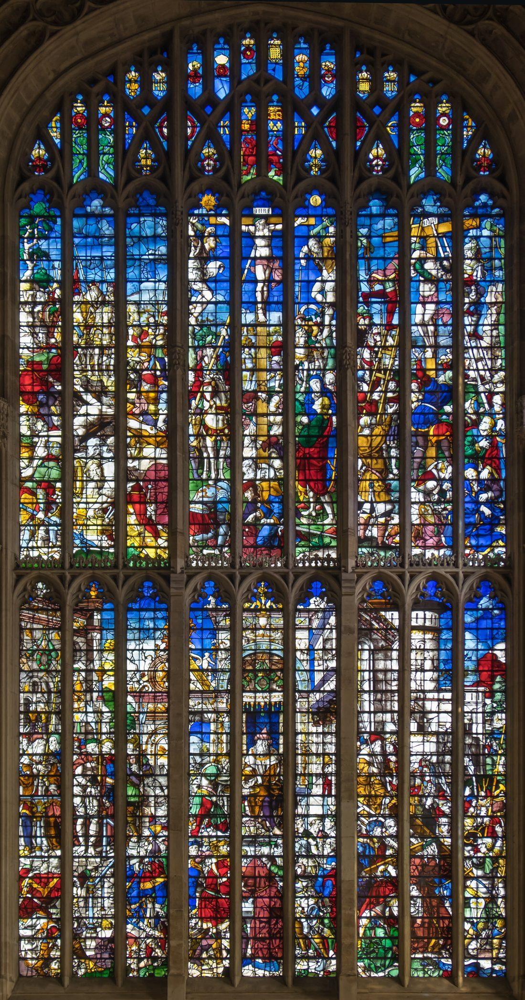
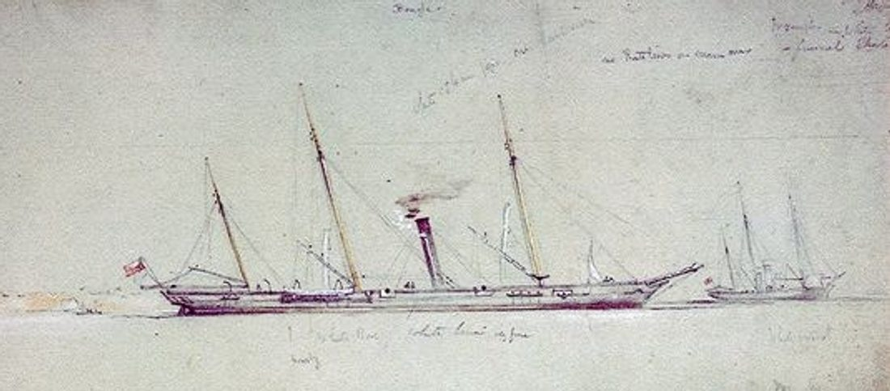
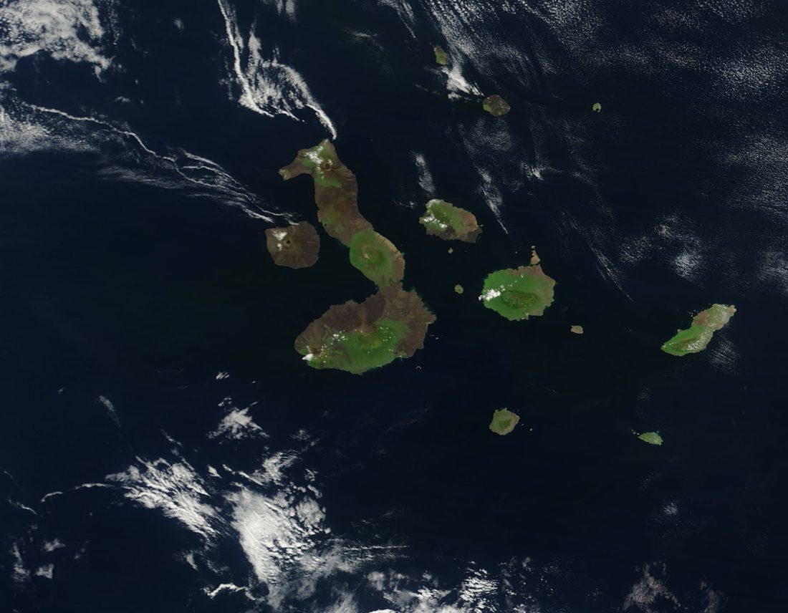
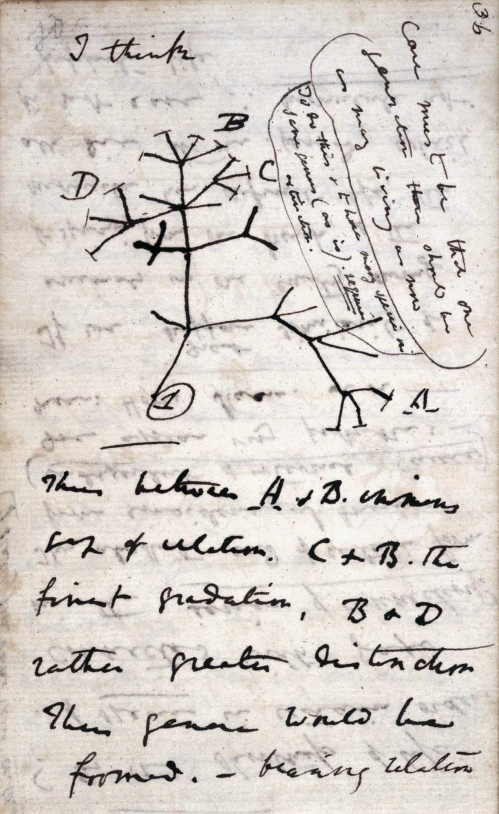
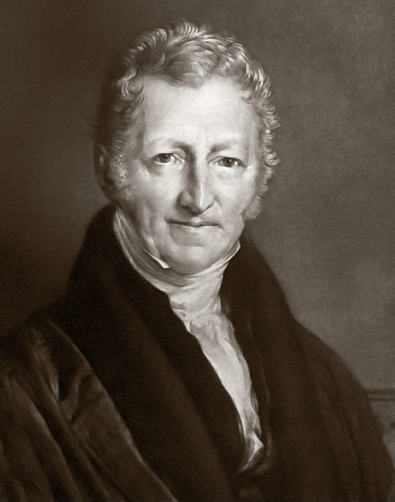
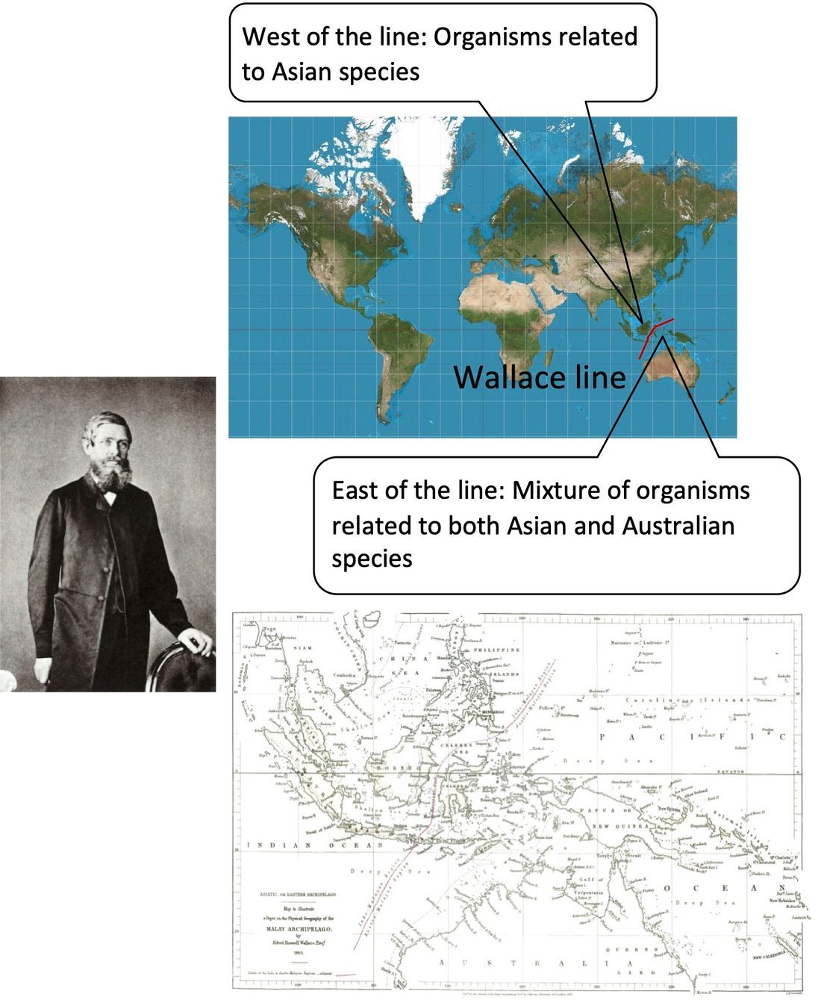
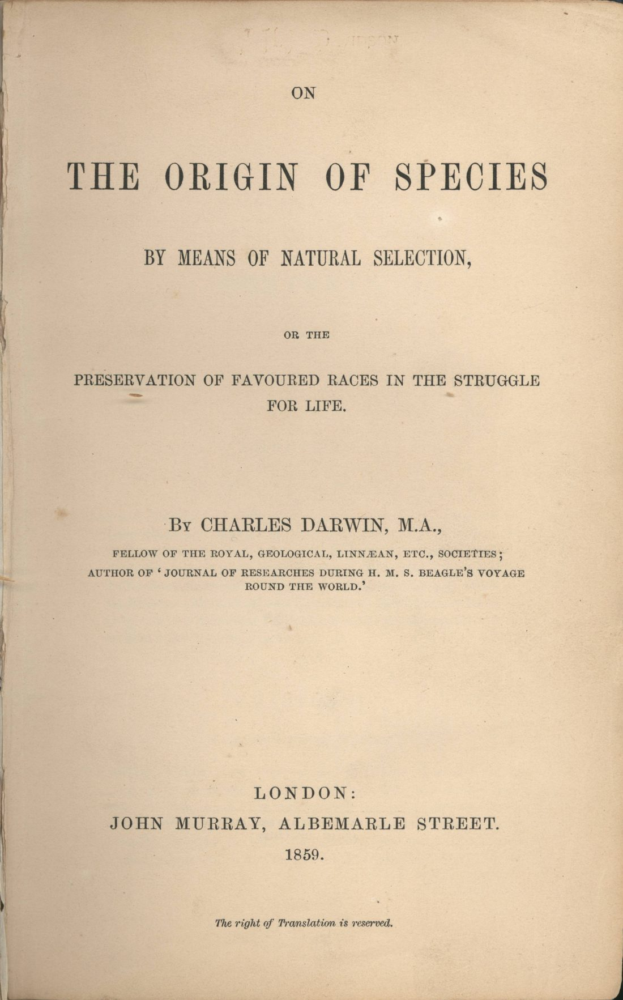
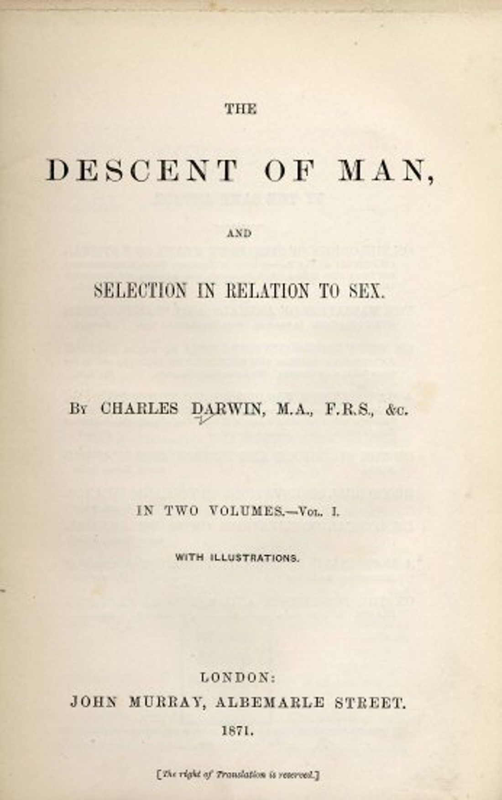
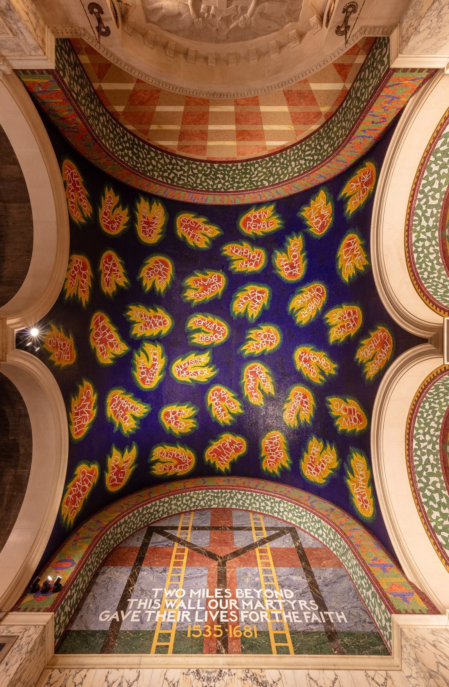

1809
生于什鲁斯伯里

2 月 12 日，查尔斯·达尔文出生。少年时偏爱自然观察，对标本和矿物着迷。
1825
爱丁堡学医

进入爱丁堡大学学医，却对解剖与手术反感；反而迷上了海洋生物等博物学观察。
1828
剑桥读神学

转赴剑桥学神学，同时跟随植物学、地质学老师野外考察，打下扎实的自然研究底子。
1831
小猎犬号启航

以随船博物学家身份登上“小猎犬号”，开始历时五年的环球考察。
1835
抵达加拉帕戈斯

在加拉帕戈斯群岛观察到近缘雀鸟与巨龟的局部差异，成为日后思想的重要种子。
1837
写下第一本进化笔记

回国后不久，达尔文在笔记本里首次勾勒“物种可能演变”的想法，并画下生命之树的雏形。
1838
读到马尔萨斯

读到马尔萨斯《人口论》，悟出生存竞争是自然选择的引擎，核心机制逐渐成形。
1858
收到华莱士来信

华莱士寄来同样主张自然选择的文稿。达尔文在友人安排下，与华莱士联名宣读，并加速写作。
1859
《物种起源》出版

11 月，《论借助自然选择的物种起源》出版，系统提出进化论与自然选择，轰动学界与公众。
1871
《人类的由来》

出版《人类的由来及性选择》，把人类也放进进化框架，引发更大争议。
1882
逝于唐恩

4 月 19 日，达尔文逝世，享年 73 岁，后安葬于威斯敏斯特教堂，与牛顿等为邻。